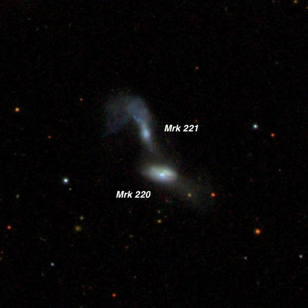
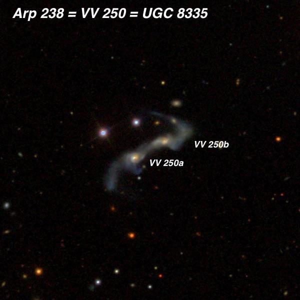

OR: Saying Farewell to Spring Galaxies 5/31/16
by Steve Gottlieb
|
Astronomical twilight doesn’t end until 10:15 now, but moonrise wasn’t until nearly 3:00 AM, allowing plenty of time for dark sky observing. Temps were very comfortable (in the low 60’s) and there was no issues with dew/humidity but the seeing was somewhat soft, limiting magnification to 375x at best. The transparency can be a mixed bag at Lake Sonoma, the Santa Rosa/Petaluma corridor can throw up a significant light dome along the southern horizon (particularly before midnight), but it can be quite dark in the west and north. In fact, Carter and I were consistently getting SQM readings of 21.47-21.51 overhead, which is surprisingly good for a site only 30 miles north of Santa Rosa. Bob had made preparations to observe Mars, along with Deimos and Phobos, just a week after opposition. Using his high-end 28-inch f/3.7 Starstructure at 700x, 12th magnitude Deimos was very easy to identify using an eyepiece fitted with an occulting bar. A few hours later we confirmed the satellite again, and verified it had moved along its orbit in the right direction and amount. Bob didn’t made an attempt at observing tougher Phobos, but will try this weekend in hopefully better seeing. I stuck with observing galaxies, particularly in the northwest where the skies were in the 21.5 range. I took a look at one galaxy group ( —Steve Gottlieb
|
|
The first field I observed was the NGC 4111 group, dominated by you guessed it – NGC 4111. This beautiful edge-on is elongated ~7:1 NNW-SSE and extends 3.5'x0.5'. It is sharply concentrated with a small very bright, elongated core and an unusually bright quasi-stellar nucleus. An extremely faint star or stellar knot was suspected near the southeast end. A very wide unequal pair (HJ 2596) with an orange mag 8.1 primary lies 3.7' NE. NGC 4111 is the brightest in a group containing UGC 7094 appeared very faint, very elongated 4:1 SW-NE, 1.0'x0.25', very low surface brightness with no noticeable concentration. The major axis of UGC 7094 points directly to
NGC 4111 and their major axes are perpendicular. NGC 4109 was fairly faint, fairly small, roundish, 20" diameter, broad weak concentration. It forms a close pair with
NGC 4145 is fairly bright, very large, roughly oval 4:3 ~E-W, 4'x3', contains a large brighter core and a noticeably patchy or irregular halo with a strong impression of spiral
structure. Two arms were fairly confident; one extending east of the core on its south side and another extending west of the core on its north side. Otherwise, it seemed like
slightly brighter HII patches in the low surface brightness halo were just resolving in the outer halo. This galaxy is located 9' due west of mag 6.8
NGC 4211 is an interacting system (
NGC 4513 faint, fairly small, elongated 3:2 SSW-NNE, 0.6'x0.4', small bright core. My real reason for looking at this field, though, is the interesting group of faint galaxies just to the north! The triple system I observed VII Zw 466 three years in Jimi Lowrey's 48" at 488x and the ring structure was resolved! VII Zw 466 appeared fairly faint, small, round with a slightly brighter rim and darker center. The ring was irregular lit and brighter on the west side with a couple of slightly brighter knots north and south. VII Zw 466 is probably the best "smoke ring" galaxy. The most likely candidate for the collision that created the ring is the peculiar spheroidal galaxy seen directly to the east of the ring.
 12 32 47.6 +63 56 21 V = 12.2; Size 2.5'x0.5'; Surf Br = 12.4; PA = 167d NGC 4521 appeared bright and large, edge-on 4:1 NNW-SSE, 1.2'x0.3', sharply concentrated with a very small bright core. A mag 11 star is 2' NNW and a mag 15.2 star is 1.4' SSE.
This galaxy is the brightest in a group including UGC 7700 is misidentified in all modern catalogues and most online sources as
Fairly faint, moderately large, very elongated 3:1 SW-NE, 0.9'x0.3'. Contains a bright elongated core. NGC 4644 is the northernmost in a group of galaxies (LGG 300) including NGC
4669, 4675, 4686, 4695 and NGC 4644 is the western component of a close pair with much fainter  UGC 7905 = VV 708 is a disturbed, interacting system with tidal tails extending from both galaxies. The pair is oriented SSW to NNE with centers separated by 35". At 225x, the
southwest member ( J.L.E. Dreyer observed the region of NGC 4644 and 4646 using Lord Rosse's 72" on 25 Apr 1878. After logging NGC 4644, he moved 20' south and described 
This is a highly disrupted double system with a bridge and streamers. A spectacular HST image is at http://www.spacetelescope.org/static/archives/images/large/heic0810al.jpg At 322x both components of This is a highly disrupted double system with a bridge and streamers though neither tidal tails was seen. A mag 14 star is 35" NE of MCG +10-19-056 and a slightly brighter mag
13.5 star is 40" NE of Here’s the HST image of the spectacular merging pair:
Using 322x this remarkable object contained a bright quasi-stellar nucleus (mag ~13.5) surrounded by a small, very low surface brightness halo. The appearance was very unusual as there was no core - just a bright nucleus that required a close look to verify it was slightly non-stellar (perhaps 3"-4" diameter). It was surrounded by a small, dim halo. So what's so special about this small galaxy? The black holes should have an insatiable appetite. However, observations with the Gemini Observatory reveal an extreme, large-scale outflow that brings the cosmic dinner to a halt. The outflow is effectively blowing the galaxy apart in a negative feedback loop, depriving the galaxy's monstrous black hole of the gas and dust it needs to sustain its frenetic growth. It also limits the material available for the galaxy to make new generations of stars. Markarian 231 is located about 600 million light-years away. Although its mass is uncertain, some estimates indicate that Mrk 231 has a mass about 3 times that of our Milky Way and its central black hole is estimated to have a mass of at least 10 million solar masses or about 3 times that of the supermassive black hole in the Milky Way.
|